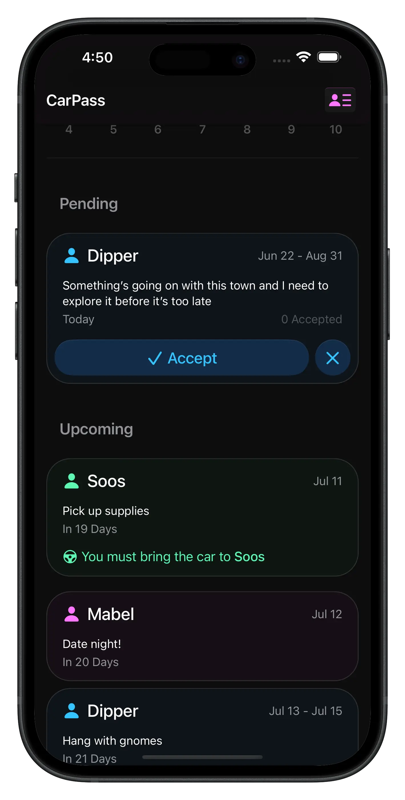
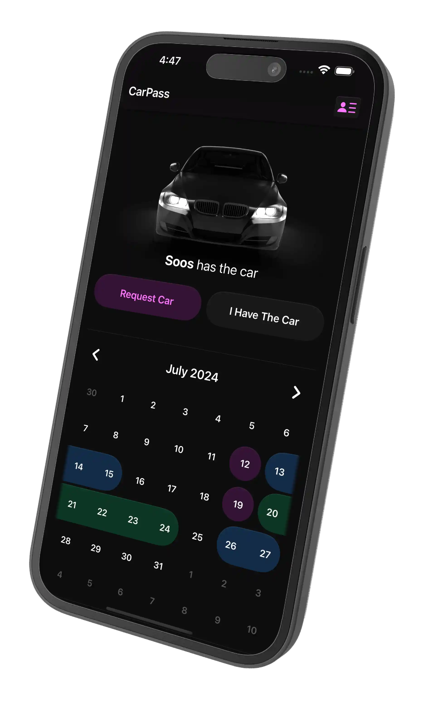
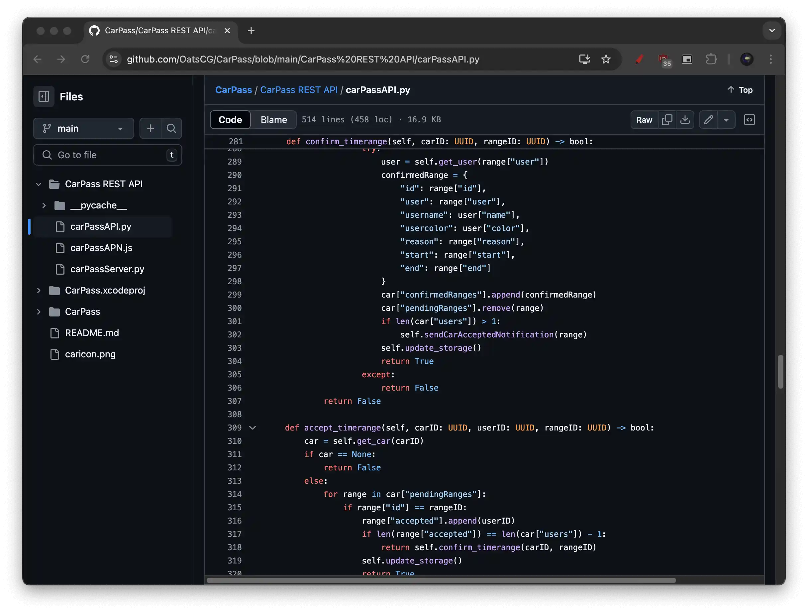
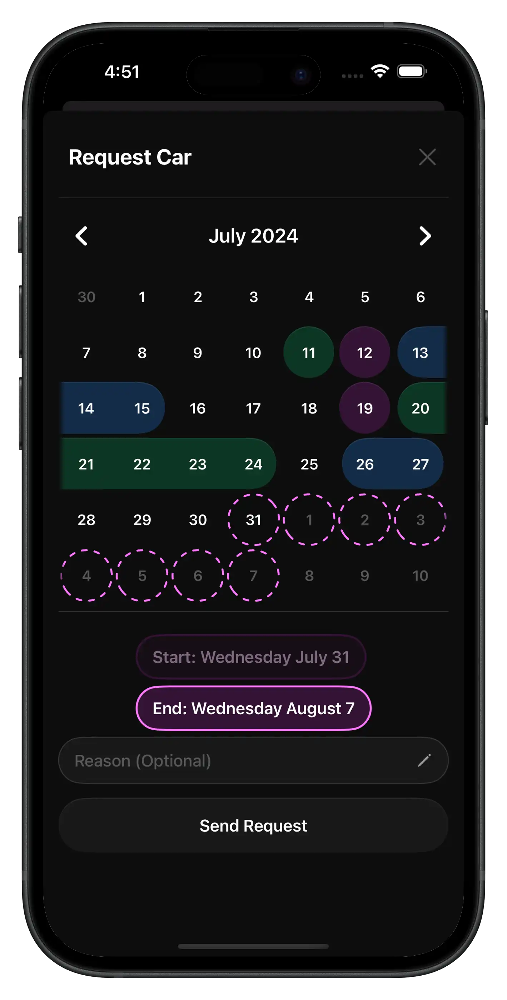
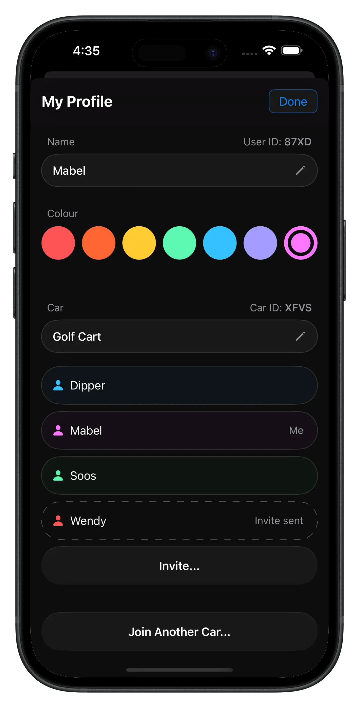

01
What is CarPass?
CarPass lets you effortlessly schedule your family car. Request your family's car, accept other requests, view a neat schedule for when the car is yours, and get notified when it's someone else's turn.
CarPass was designed in Figma, and built modularly in SwiftUI with Agile sprints. The app was completed and published in 5 days. The goal of CarPass was to make it easier to share my family's car among my brothers.

02
Live Scheduler
CarPass uses a custom lightweight database built from the ground up, and an open-source server that encourages transparancy in security. The server is a Node.js Docker container. This container runs scripts for invites, recurring notifications, and database cleanup. Notifications are handled by an Apple Push Notification (APN) script, maintaining confidentiality with users' APN tokens.


03
Design Language and Interactions
The design system uses directional highlighting to display important elements. The schedule and request interfaces are designed with fluid animations that beautifully showcase profile colours.
Profiles are automatically made for each new device, eliminating any onboarding friction with accounts. Users can differentiate themselves with profile colours, invite people to their car, or join another person's car all without needing to sign up. The client fetches content live by maintaining a TCP connection with the server, resulting in instant profile updates across devices.
